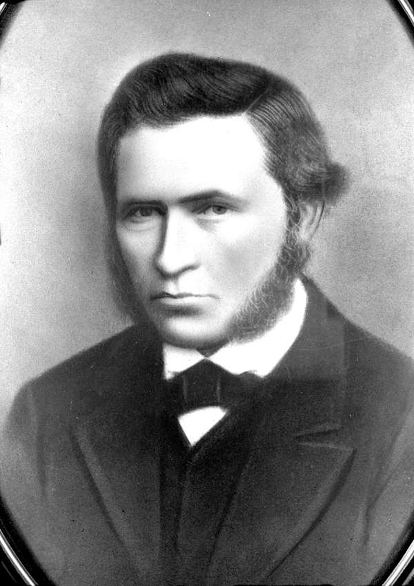

Explanatory Note
Families Chart
Denmark Map
Chapter 2
Back to Table of Contents.

The history of Hans Sorensen and his family chronicles a lifetime of hope and perseverance in the face of personal and global turmoil and change. Above all, it gives his family and posterity a message that despite the challenges and tragedies that come into our lives, we must remain true to our convictions and trust in our Savior, Jesus Christ. This biography is written with the desire that those who read it will be true to the heritage left to them by this man and ancestors like him.
Hans Sorensen did not write his history. No diaries, journals, or notes have been found, but the records of others - including government, church and family writings - give a lot of detail into his life and the struggles he faced. This history contains many references which describe in detail the conditions surrounding the life of Hans and his family. Undoubtedly, there are more records and accounts that may be found in the future which will add to this story. The purpose of this writing is to paint as complete a picture as possible of Hans Sorensen.
A very fitting metaphor for the life of Hans Sorensen is the Salt Lake Temple, dedicated on April 6, 1893. This came after 40 long and difficult years of construction and dedicated effort. It is interesting that Hans Sorensen passed on to eternity on this same date, after living a very difficult life of turmoil and hard work. Hans was a skilled stone cutter and worked at one time on the construction of the Salt Lake Temple. The construction of the temple began with a ground-breaking on April 6, 1853. Almost 5 years later, in 1858, Hans and his family were baptized and joined the Church of Jesus Christ of Latter-day Saints. The process of building the temple involved many setbacks and difficulties over the years. Similarly, during his life, Hans struggled against many adversities, yet remained true to the Gospel he embraced in Denmark.
The Deseret News, on the occasion of the dedication of the Salt Lake Temple, published several articles about the temple and its dedication. The writer of one of these articles expounds on the foundation and construction of the temple, likening it to those who built it. One passage in that article rings true concerning Hans Sorensen:
"… Does it not typify in its construction to record of the Church whose members have built it — with its foundation broad and deep, with slow yet steady step marching forward and upward to perfection, with pinnacles pushing ever higher, crowned with the image of one who brought tidings of great joy, the everlasting Gospel to preach to them that dwell upon the earth? Does it not in its various stages represent the condition and circumstances of those whose names and toil have built it? Its history fully told would be in great measure their history; and since they came to these mountains there are but few pages that cannot be read in the enduring stone of its walls." 1
The story of Hans Sorensen shows his "broad and deep" foundation in the Gospel of Jesus Christ. His struggles and toil, from beginning to end, indeed mirror the struggles and toils of those who worked on and completed the Salt Lake Temple. It is believed that some of "the enduring stone of its walls" was actually cut or set by Hans. The comparison of the temple structure to the history of the people gives a pattern for building the life, stone by stone, of Hans Sorensen and of his family's life from their humble and difficult beginnings in Denmark many years ago.
{kind=link}
{kind=link}